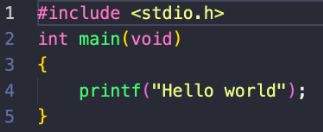
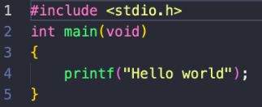

C# verziói
| Verziószám |
Megjelenés |
Főbb újdonságok |
| 2.0 |
2005. november |
Generikus és parciális típusok, anonim metódusok, iterátorok |
| 3.0 |
2006. november |
Implicit módon megadott lokális változók, lambda-, és lekérdezés-kifejezések,
kifejezésfák, objektuminicializálók |
| 3.0 |
2007. november |
Language Integrated Query, lambda-kifejezések, kiegészítő metódusok |
| 4.0 |
2010. április |
Dinamikus kötés, opcionális paraméterek, generikus ko- és kontravariancia,
Párhuzamos programozás támogatás, PLINQ |
| 5.0 |
2012. augusztus |
Aszinkron feladatok, párhuzamos programozás továbbfejlesztése |
| 6.0 |
2015. július |
Null kondicionális operátor, statikus importálás, csak olvasható auto tulajdonságok
|
| 7.0 |
2017. március |
Out változók, Tuple típus, Pattern matching, helyi metódusok, throw kifejezések |
| 7.1 |
2017. augusztus |
aszinkron Main metódus |
| 7.2 |
2017. november |
private protected hozzáférési szint, számok tagolásához használható a _ karakter
|
| 7.3 |
2018. május |
stackalloc tömb inicializáció |
| 8.0 |
2019. szeptember |
Nullable referencia típusok |
| 9.0 |
2020. szeptember |
Rekordtípusok, init only setterek, mintaillesztés, kódgenerátor |
 
